Everything in the box.
Superpowers MainStage doesn't have on its own — complex MIDI automation, a real mixer, smart routing, and a live performance surface — that work together as one system.
A Mixer that is yours.
A dedicated, fully customizable fader-and-matrix control surface for your whole rig. Faders, a button matrix, knobs, and top/side utility buttons are all built dynamically from your Concert — so the surface reflects your instruments, not a generic layout.
- Ghost Controls — a lightweight reference that mirrors a deeply-nested SubScreen control on the main Mixer.
- Radio Groups & Momentary — buttons latch by default; flip one to Momentary for stutters, or group several so one turns the others off.
- Hardware in, hardware out — map a Launch Control XL, a Lemur layout, or any CC controller, with bidirectional feedback.
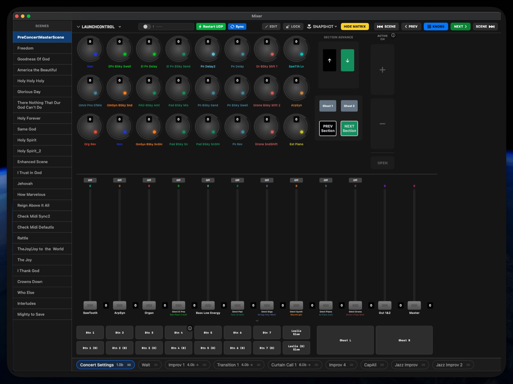
Your plugins. Your design.
When an instrument has more depth than fits on one screen — 32 Omnisphere matrix buttons, 40 organ drawbars — it gets its own surface, reachable from a fader's name label, one tap away. Starter templates ship in the box.
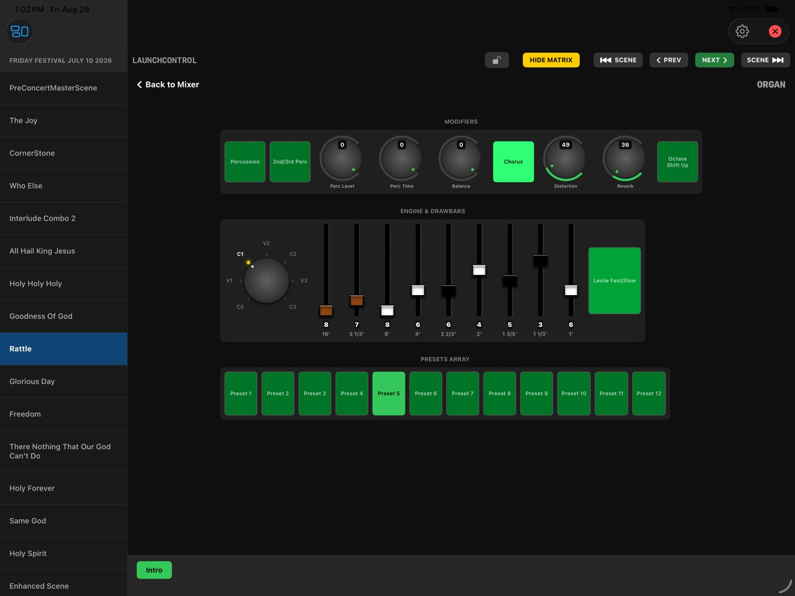
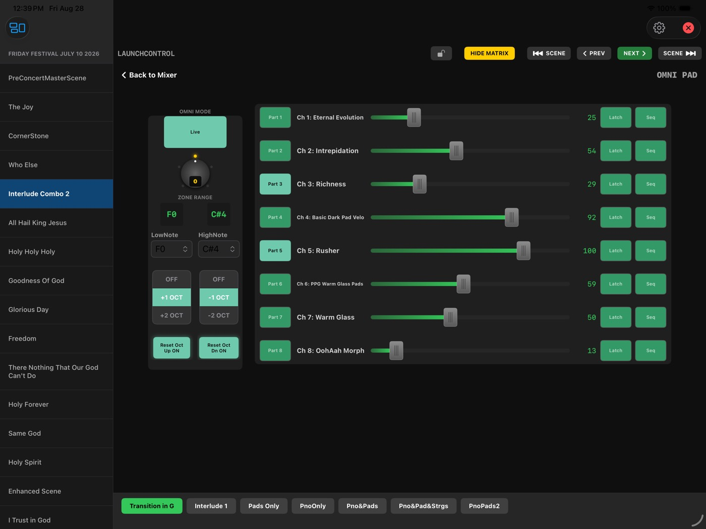
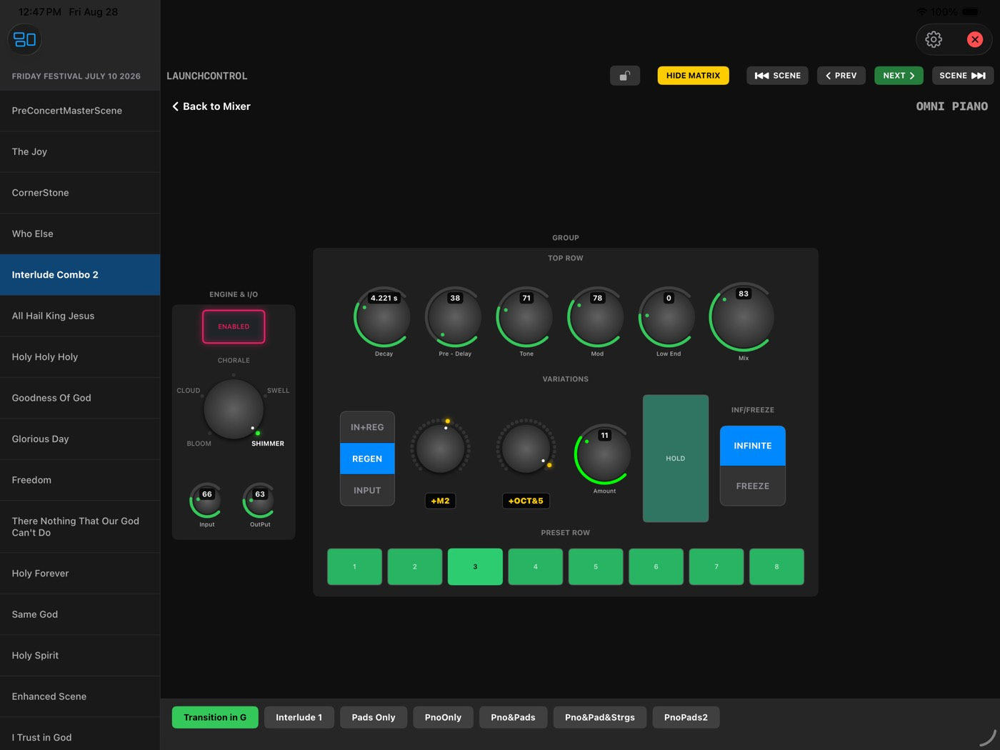
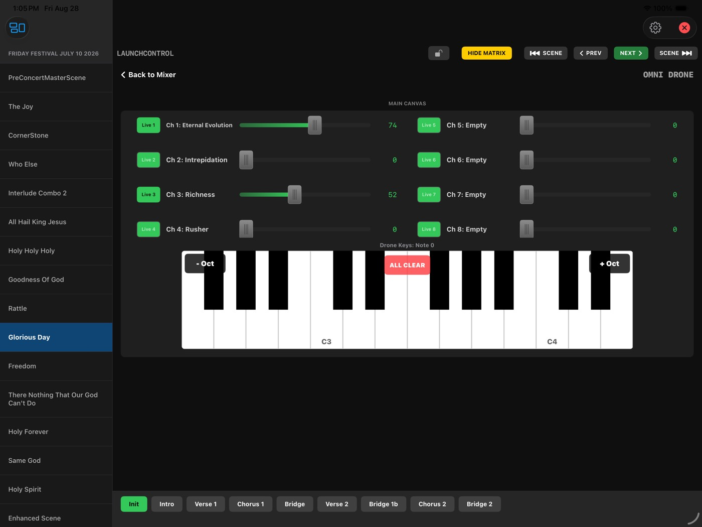
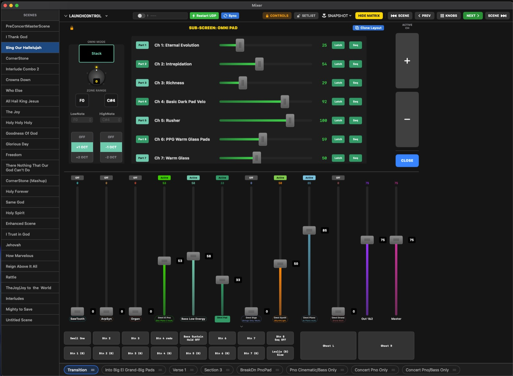
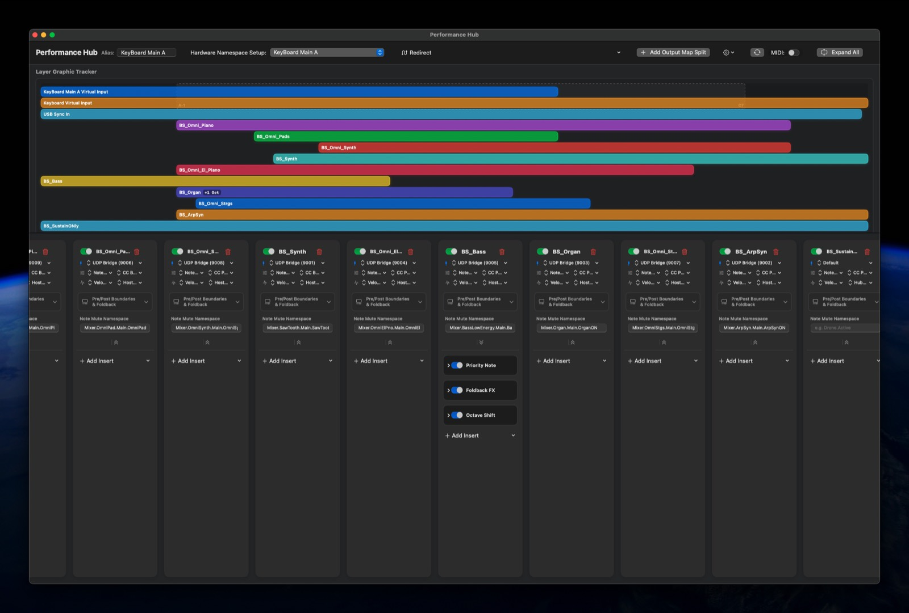
The Performance Hub.
A live dashboard designed to be read at a glance under stage lighting.
- Real-time keyboard split visualization across multiple physical keyboards.
- Per-Section countdown timers with an approaching-transition warning.
- Master patch and tempo display.
- An instant Panic control.
Concert Editor
Think of a Scene as a song and its Sections as the parts of that song. Each Scene carries a Master Patch — the MainStage or external-synth program it loads — plus its own list of MIDI events per Section, fired automatically the instant the Scene loads.
- Program Change, Control Change, and SysEx triggers per Section.
- Dynamic Ramps — convert a Section's faders to smooth ramps in one action: Linear, Exponential, Logarithmic, or S-Curve, timed in Bars, Beats, or Seconds.
- Presets — reusable event bundles you can drop into any Section, trigger independently, or attach to a button's ON/OFF actions.
- Section timers — give a Section a duration and the Performance Hub counts it down.
AUv3 Host FX Mode
Load MIDI Assistant's plugin directly into a MainStage channel strip for sample-accurate, in-host control. The plugin runs on a real-time-safe, lock-free C++ DSP kernel with zero heap allocation on the audio thread. Performance ports (notes) and control ports (CC) run on separate pipelines, so a fader burst can never delay a note.
Smart Routing & Namespaces
MainStage knows your controller as "Network Session 1" and you can't rename it. MIDI Assistant creates a virtual port with any name you want and routes your controller through it via a Namespace — a logical tag like Lead Synth instead of a raw channel number. Swap the physical keyboard later and you re-point one Namespace instead of hunting down every mapping across your rig.
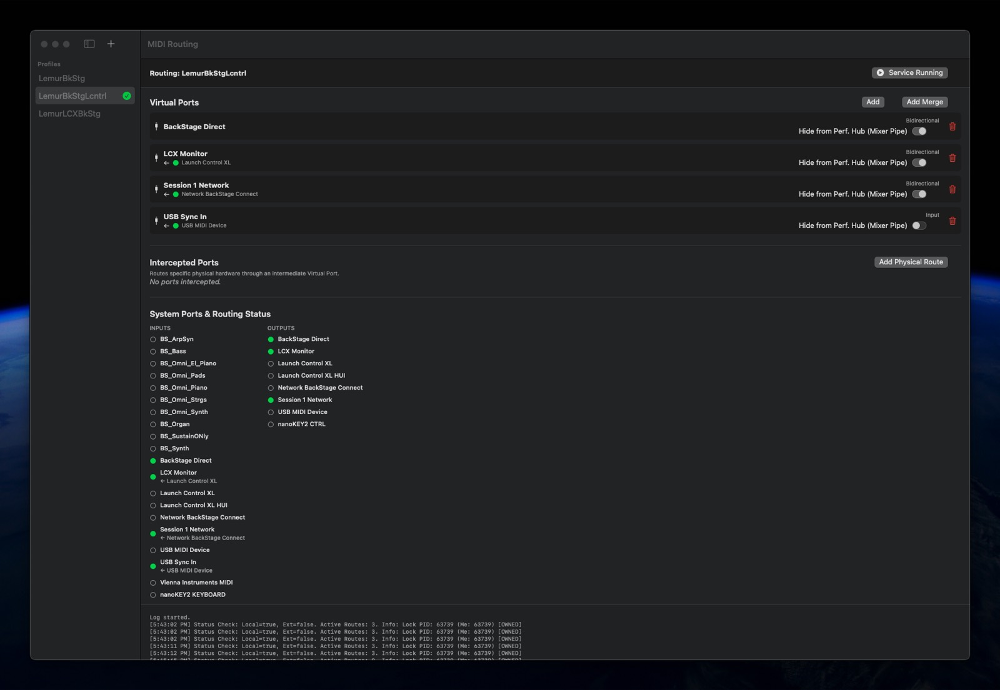
Four ways to look at the same show.
Switch layouts from the toolbar — no reconnecting, no lost state. Tap a Section pill to jump to it; tap the Scene name for a menu of every Scene and Section; tap a progress bar to pause a countdown.
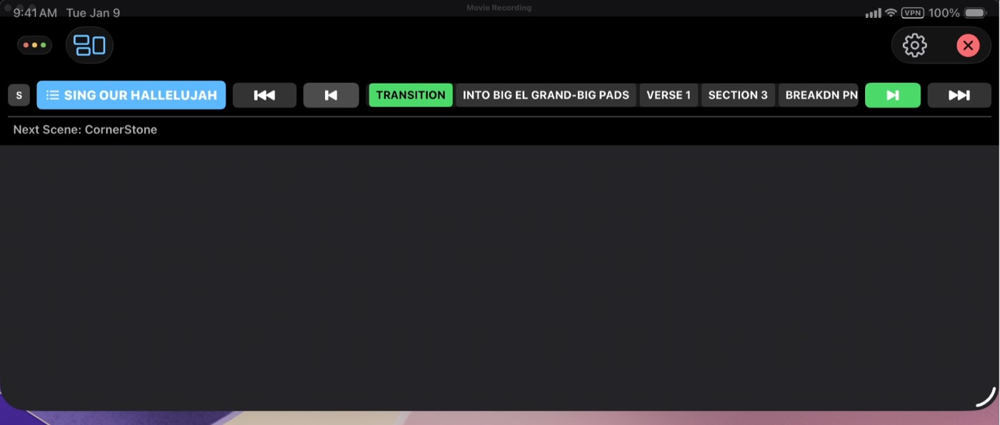
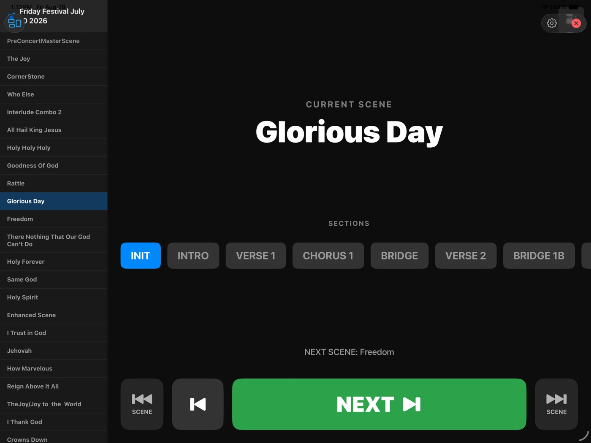
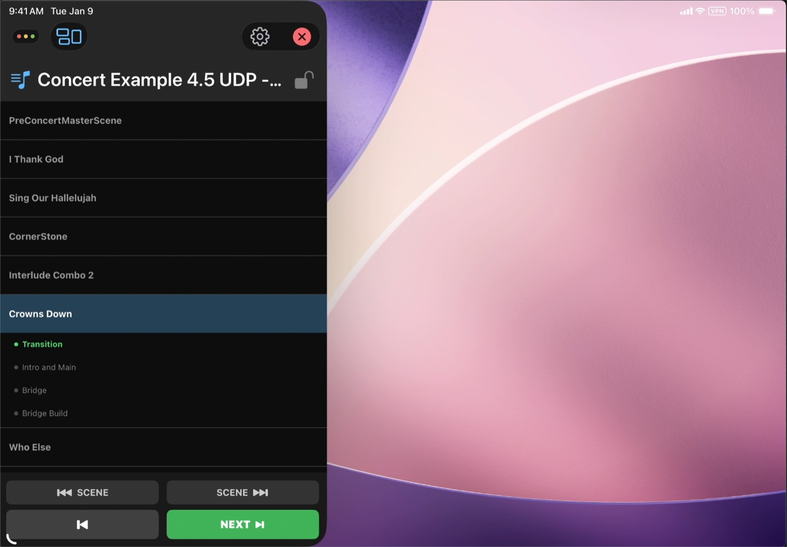
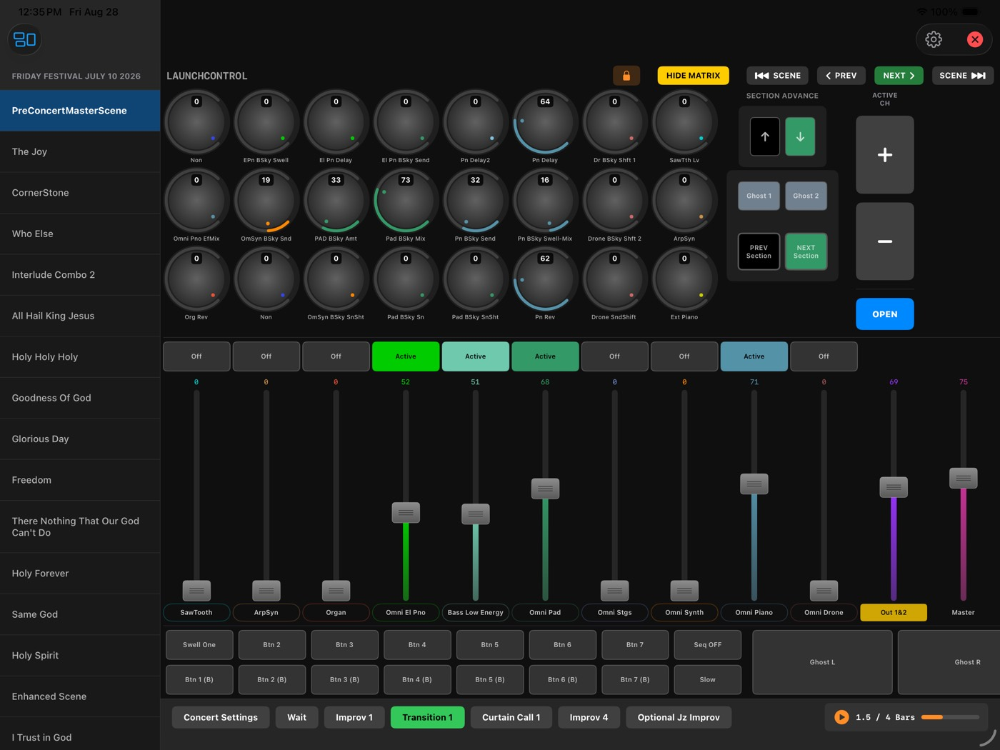
One iPad. Your whole rig — and Lemur too.
Compact and Setlist Only are built to share the screen. Run the Remote as a strip along the top or a panel down the side, with Lemur — or any other controller app — filling the rest. Scene changes, Sections, and the next-song cue stay in reach without leaving the surface you're playing.
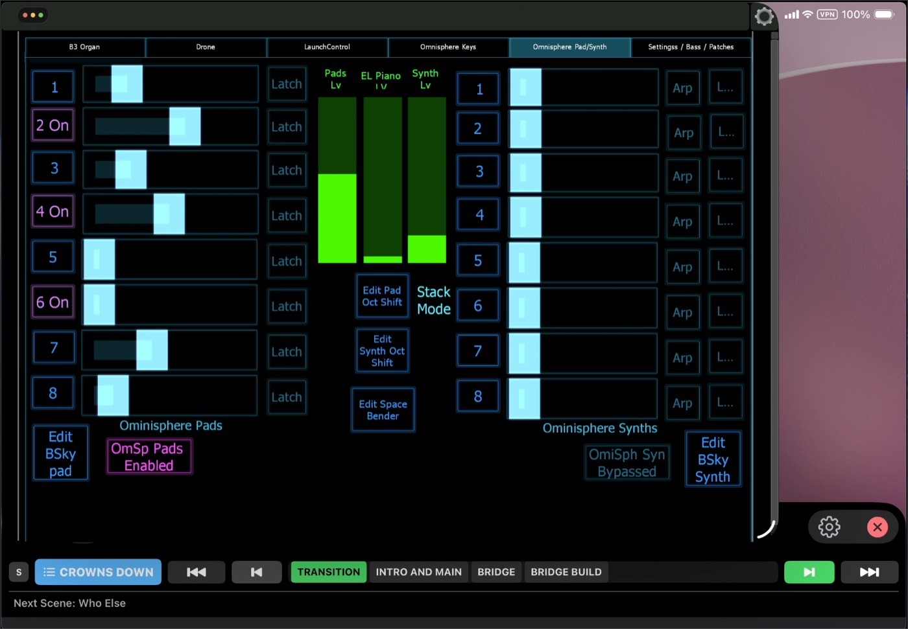
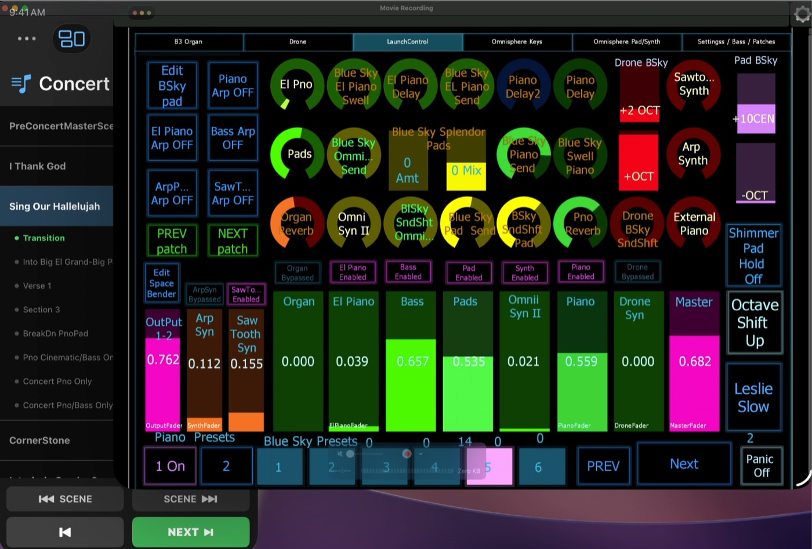
Soft Takeover
A Scene change can leave a non-motorized fader pointing at the wrong value. Pickup waits for the fader to cross the current value; Proportional scales your movement to catch up smoothly. No jumps either way.
Legato Engine
Changing Scenes mid-chord shouldn't cut your sustain dead. The old patch keeps sounding until you release the notes, then cleans up automatically.
Dynamic Relative Ramping
Transitions read the parameter's actual current value and ramp from there — no "jump" from naive fixed-value scene changes, even if the previous Section left things somewhere unexpected.
Capture & Catalog
Snapshot a live MIDI parameter dump into a named, reusable preset in seconds — searchable by genre, BPM, key, or tag. Grab a perfect soundcheck balance instead of hand-typing thirty CC values.
Jitter Lock Filter
Analog controls drift. The filter removes electrical jitter automatically so a fader you aren't touching stays where you left it.
Works with any DAW
MainStage gets the deepest integration via Host FX Mode, but the Mixer, Concert Editor, and routing engine run on standard MIDI — so they work alongside Logic Pro, Ableton Live, or any other MIDI-capable software too.
Ready when you are.
Requires macOS 13 or later. The iPad Remote connects over your local network.